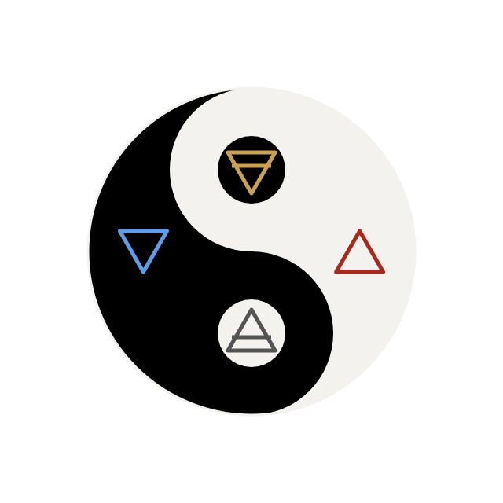

Ælemental Codex
Oneness
Duality
Perspectives
| Perspective | State |
|---|---|
| I | Arational |
| We | Rational |
| All | Arational |
Elements
| Arational | Rational | |
|---|---|---|
| Yang | 🜂 Fire | 🜁 Air |
| Yin | 🜄 Water | 🜃 Earth |

| Perspective | State |
|---|---|
| I | Arational |
| We | Rational |
| All | Arational |
| Arational | Rational | |
|---|---|---|
| Yang | 🜂 Fire | 🜁 Air |
| Yin | 🜄 Water | 🜃 Earth |
